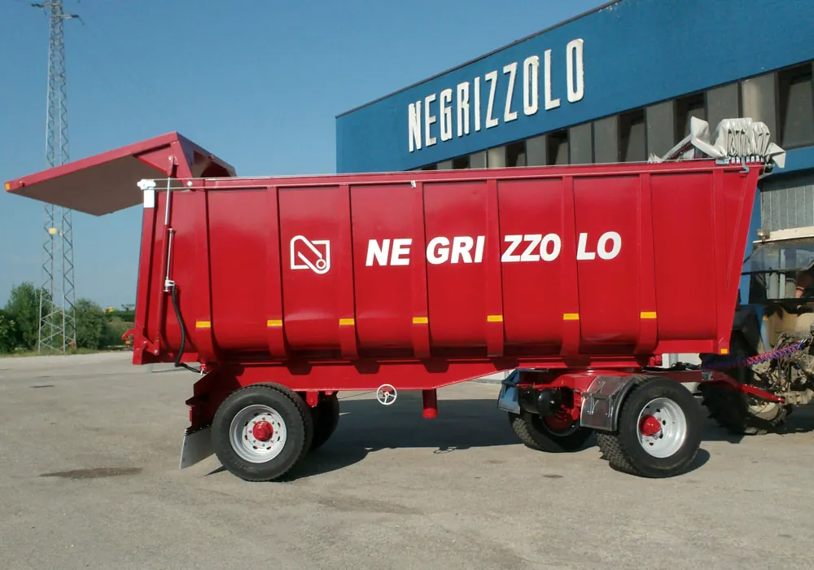
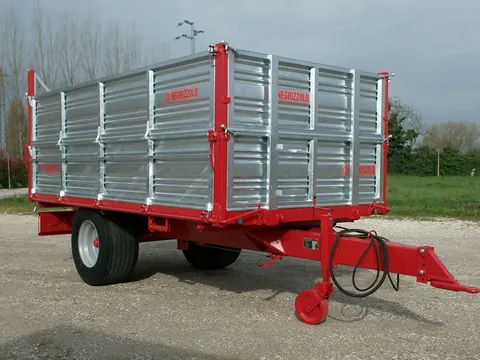
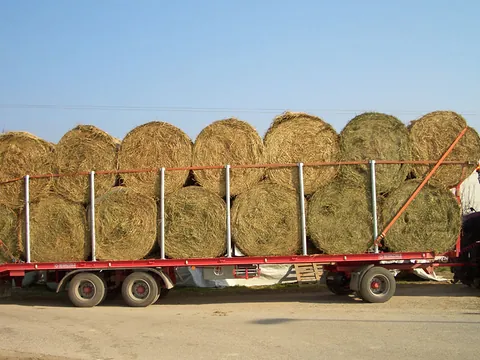
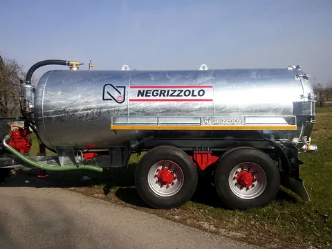
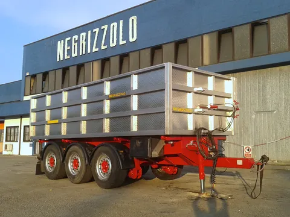
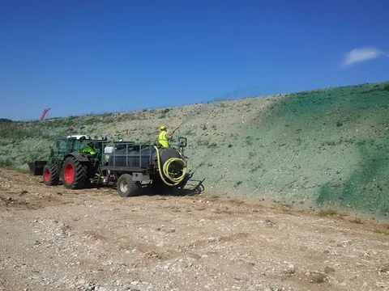
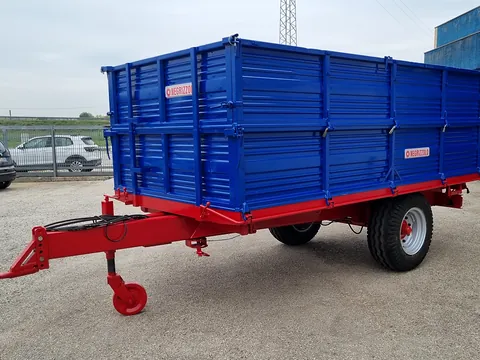
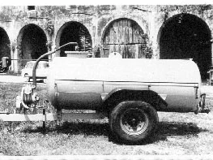
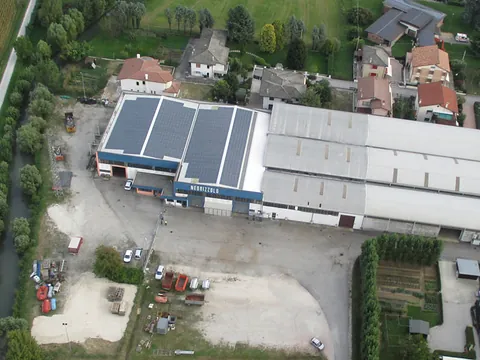

Officina meccanica dagli anni '50 · Grisignano di Zocco (VI)
Rimorchi, carribotte e vasche inox. Riparazioni di qualsiasi marca. Taglio laser.
Lunedì-venerdì 8-12 e 14-18, sabato mattina su appuntamento

Costruiamo, su misura
Ripariamo
Le nostre macchine
Tutti i nostri macchinari possono essere personalizzati in base alle vostre esigenze, anche nel colore. Le tabelle dei modelli sono nelle pagine di ogni prodotto.

19 modelli a listino
Rimorchi ribaltabili
35-200 quintali
Dumper o con sponde, da un asse centrale a tre assi.
Scheda e tabella
18 modelli a listino
Rimorchi fissi
30-200 quintali
Con o senza rampe, con o senza sponde, lunghi fino a 10,5 m.
Scheda e tabella
13 modelli, 1, 2 e 3 assi
Carribotte
14-250 ettolitri
Zincati, certificati CE ed omologati per la circolazione stradale.
Scheda e tabella
Per uva e granaglie
Vasche inox
Anche sul vostro rimorchio usato
Su misura, a scarico laterale o posteriore; si smontano per tornare al normale uso del rimorchio.
Scheda
Fuori standard
Applicazioni speciali
Idrosemina, digestato, fogliame
Botti per idrosemina, barre per il digestato, rimorchio aspira-foglie, cassone scarrabile.
Scheda
Usato in vendita
Rimorchio agricolo 60 q.li
7.800 €
Monoasse ribaltabile, completamente revisionato e riverniciato. Cassone 4,00 x 2,00 m.
Vedi l'annuncioL'officina in numeri
La prima in Veneto a dedicarsi alla costruzione di cisterne e carribotte
- 1800
- La famiglia è di fabbri e maniscalchi già nel lontano 1800.
- 250 hl
- Il carrobotte più grande a listino, a tre assi. Il più piccolo è da 14 hl.
- 50
- Modelli a listino: 19 ribaltabili, 18 fissi, 13 carribotte. E tutto su misura.
- 2.000
- Metri quadri coperti di officina.
- 5.000
- Metri quadri di piazzale esterno.
- 8 ore
- Lavorative, per il taglio laser di pezzi singoli e piccole serie.
Assistenza
Riparazioni di qualsiasi marca
Ripariamo macchine agricole di qualsiasi marca con la precisione e la rapidità che ci contraddistinguono da decenni.
- Qualsiasi marcaNon solo le nostre: rimorchi, botti e altre macchine agricole.
- Magazzino ricambiVeloce ed efficiente.
- Fermo macchinaRidotto al minimo: il servizio di riparazione è da sempre uno dei fiori all'occhiello della ditta.
Conto terzi
Taglio laser e carpenteria
Soddisfiamo ogni necessità di taglio laser, dal pezzo singolo alla grande serie. Poi piegatura, cesoiatura, saldatura, carpenteria in acciaio inox e ferro, assemblaggio e montaggio delle parti meccaniche, idrauliche e pneumatiche.
8 orelavorative nel caso di pezzi singoli e piccole serie.
Materiali
- Ferro
- Acciaio inox
- Alluminio
- Cor-ten
- Zincato
- Rame
- Ottone
- Manganese
Allegate il disegno alla mail e scrivete materiale, spessore e quantità: si apre già indirizzata a laser@negrizzolo.it.
Chi siamo
Officina di famiglia, da sempre al servizio dell'agricoltura. Con immutata passione continueremo a fornire un servizio serio e professionale.
- 1800
Fabbri e maniscalchi.
- Anni '50
Riccardo Negrizzolo apre la ditta: cisterne e carribotte.
- Anni '60
Arrivano i rimorchi.
- Anni '80
Dalla fine del decennio c'è Giovanni.
- 2000
All'inizio del 2000 arriva Paolo, figlio di Giovanni.

"Assistenza e riparazione sempre rapido e professionale."
AgroNotizie, 19 ottobre 2008
Orari e contatti

Via Ferramosca 14, 36040 Grisignano di Zocco (VI)Piazzale di 5.000 mq; uscita A4 Grisignano di Zocco.
- Telefono0444 614515
- Agricolturainfo@negrizzolo.it
- Laser e carpenterialaser@negrizzolo.it
- Orari
Lunedì-venerdì 8-12 e 14-18
Sabato mattina su appuntamento